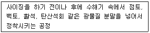
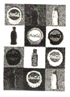
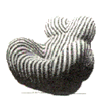
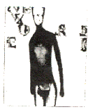
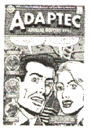
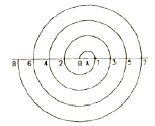
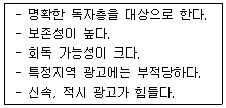
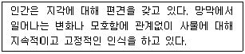

시각디자인산업기사 (2008-03-02 기출문제)
1과목: 색채학
1. 오스트발트 표색계의 설명으로 틀린 것은?
- 백색량(W)+흑색량(B)+순색량(C)=100%이다.
- 무채색일 경우 W+B=100%가 된다.
- 완전 백색, 완전흑색, 순색을 각각 꼭지점으로 하는 정3삼각형을 구성한다.
- 색상환은 기본 8색상을 각각 4색상으로 세분하여 32색상으로 이루어져 있다.
(정답률: 알수없음)

2. 검정 색지 위에 작은 흰 색지의 대비 실험과 관련이 있는 대비현상은?
- 색상대비
- 명도대비
- 채도대비
- 보색대비
(정답률: 알수없음)
3. 표면색을 백색광으로 비쳤을 때 각 파장별로 빛이 반사되는 정도를 나타내는 용어는?
- 분광분포
- 분광특성
- 분광반사율
- 분광분포곡선
(정답률: 알수없음)
4. 다음 관용색명 중 명도가 가장 높은 것은?
- 분홍
- 코발트 블루
- 크림색
- 초콜릿색
(정답률: 알수없음)
5. 다음 색채의 여러 지각현상에 관한 설명으로 맞는 것은?
- 중성색과 난색을 대비시키면 중성색이 따뜻하게 느껴진다.
- 두 색이 붙어있는경계 언저리에서는 대비현상이 약하게 일어난다.
- 섬세한 줄무늬처럼 주위를 둘러싼 면적이 작을때는 주위색과 가깝게 느껴진다.
- 보색끼리 대비시키면 두 색의 선명도가 떨어진다.
(정답률: 알수없음)
6. 다음 중 무채색과 유채색에 관한 설명으로 잘못된 것은?
- 무채색은 밝고 어둠만을 갖는 색이고, 유채색은 색감을 갖는 모든 색이다.
- 반사율이 96%인 경우 흰색, 10% 정도이면 검정색으로 보이게 된다.
- 유채색에 무채색을 혼합하여도 색 기미가 있으면 유채색이라 한다.
- 유채색은 색상, 명도, 채도의 속성을 갖고 있는 색으로 인간의 정서에 강하게 적용한다.
(정답률: 알수없음)
7. 다음의 실내 배색에 관한 설명 중 잘못된 것은?
- 방에 안정감을 주기 위해 위로부터 아래로 내려 오면서 명도를 낮춘다.
- 벽면은 일반적으로 명도 8 전후가 좋다.
- 채도는 명도와 색상에 관계없이 2~4 정도가 적당하다.
- 색상은 실내의 분위기에 맞게 선택한다.
(정답률: 알수없음)
8. 다음 중 컬러 솔라이드에 해당되는 혼합방법은?
- 가산혼합
- 감산혼합
- 중간혼합
- 동시가법 혼색
(정답률: 알수없음)
9. 문,스펜서(Moon,Spence)의 색채조화론에서 조화의 경우가 아닌 것은?
- 동일(identity)조화
- 유사(Similarity)조화
- 대비(Contrast)조화
- 통일(Unity)조화
(정답률: 알수없음)
10. 수송기관의 색채설계에서 기술적인 조건에 해당되지 않는 것은?
- 변색되지 않는 색료가 좋다.
- 광택이 강할수록 좋다.
- 손쉽게 구입되는 색료가 좋다.
- 조색(調色)이 용이할수록 좋다.
(정답률: 알수없음)
11. 명도차에 의한 그라데이션(Gradation) 효과가 가장 좋은 색의 배열 사례는?
- 빨강-노랑-녹색
- 노랑-주황-갈색
- 흰색-검정-회색
- 녹색-파랑-보라
(정답률: 알수없음)
12. 파란색 물감에 흰색 물감을 섞었을 때 나타나는 변화는?
- 명도와 채도 모두 높아진다.
- 명도와 채도 모두 낮아진다.
- 명도는 높아지나 채도는 낮아진다.
- 채도는 높아지나 명도는 높아진다.
(정답률: 알수없음)
13. 빛의 파장 영역 중 색 자극으로 작요하는 380nm~780nm의 영역은?
- 반사영역
- 감각영역
- 가시영역
- 단색영역
(정답률: 알수없음)
14. 다음 중 한국의 전통 오정색과 상징이 잘못 연결된 것은?
- 청색-동쪽, 청룡, 인
- 황색-서쪽, 백호, 의
- 적색-남쪽, 주작, 예
- 흑색-북쪽, 현무, 지
(정답률: 알수없음)
15. 물감이나 인쇄 잉크 등 색료의 3원색이 아닌 것은?
- Cyan
- Magenta
- Yellow
- Green
(정답률: 알수없음)
16. 다음 중 가장 가깝게 보이는 진출색은?
- 파랑
- 녹색
- 주황
- 회색
(정답률: 알수없음)
17. 오스트발트의 색입체를 중심축에 대하여 수평으로 자를 경우 나타나는 면에 대한 설명이 바른 것은?
- 흰색의 양만 동일한 색상면이 된다.
- 검정색의 양만 동일한 색상면이 된다.
- 흰색과 검정색의 양이 동일한 등가색환이 된다.
- 무채색만 나타난다.
(정답률: 알수없음)
18. 국기의 빛깔은 흰색을 포함하여 빨강, 파랑, 노랑, 녹색 등 선명하고 인식하기 쉬운 것을 사용하는 게 보통이다. 빨간색이 지니고 있는 내용을 바르게 설명한 것은?
- 애국자의 희생적인 피, 정열, 혁명, 박애등
- 강, 바다, 물, 하늘, 희망, 자유 등
- 황금, 국부, 태양, 번영 등
- 역사의 암흑시대, 고난 의지 등
(정답률: 알수없음)
19. 먼셀의 색입체에 관한 설명으로 틀린 것은?
- 색상은 원 둘레의 척도로서 무채색을 중심으로 여러가지 순색을 배치하였다.
- 명도는 수직 축에서 상승하는 척도로서 위로 올라갈수록 고명도, 아래로 내려갈수록 저명도라고 한다.
- 채도는 중안 수직 축에서 수평으로 멀어지는 척도로서 안쪽 부분은 저채도, 바깥쪽으로 갈수록 고채도이다.
- 먼셀의 색입체를 수평으로 절단하면 같은 색상의 색이 나타나므로 등색상면으로 한다.
(정답률: 알수없음)
20. 색채의 감정적 효과에 대한 설명으로 가장 타당한 것은?
- 먼저 본 색의 영향으로 다음 색이 다르게 보이는 것과 관계가 있다.
- 색으로 화려함과 수수함, 흥분이나 침정감 등을 느끼는 것과 관계가 있다.
- 색이 주위 색의 영향을 받아 다르게 보이는 것과 비슷해 보이는 것과 관계가 있다.
- 색이 뚜렷하게 잘 보이는 것과 관계가 있다.
(정답률: 알수없음)
2과목: 인쇄 및 사진기법
21. 물과 기름의 반발작용을 이용하여 인쇄하는 방식은?
- 볼록판 인쇄
- 평판 인쇄
- 오목판 인쇄
- 공판 인쇄
(정답률: 알수없음)
22. 일반적으로 가장 많이 사용하는 35mm 필름의 화면 크기(Size)는?
- 24mm×36mm
- 36mm×48mm
- 48mm×56mm
- 56mm×78mm
(정답률: 알수없음)
23. 다음 중 평판 판식에 속하는 것은?
- 목판
- 스크린판
- 망점 그라비어판
- PS판
(정답률: 알수없음)
24. 할로겐화은 유제(emulsion)에서 젤라틴(Gelatin)의 역할이라고 할 수 없는 것은?
- 할로겐화은 입자가 붙어 있도록 하는 투명한 물질로 작용한다.
- 할로겐화은을 현탁시키고 응고를 방지한다.
- 노출시 할로겐 수용제로 작용하여 퇴행 현상을 방지한다.
- 실제로 빛과 반응하며 필름의 감색성을 결정짓는 주된 물질로 사용된다.
(정답률: 알수없음)
25. 다음 보기에서 설명하는 종이의 제조 공정은?

- 고해
- 착색
- 전충
- 초지
(정답률: 알수없음)
26. 속장과 표지를 연결하는 부분으로 표지가 속장에서 떨어지는 것을 방지하는 역할을 하는 공정은?
- 면지붙이기
- 장합
- 실매기
- 다듬재단
(정답률: 알수없음)
27. 판통과 압통이 모두 실린더로 되어 있으며, 판통에 인쇄판을 붙이고 판통과 압통사이로 낱장 종이나 두루마리 종이를 통과시켜 인쇄하는 방식의 인쇄기는?
- 평압식 인쇄기
- 족답식 인쇄기
- 원압식 인쇄기
- 윤전식 인쇄기
(정답률: 알수없음)
28. 연색성이 좋고 색평가용 표준광원으로 사용되며, 열선 흡수 필터와 냉각팬(fan)이 내장되어 있는 광원은?
- 텅스텐등
- 할로겐등
- 크세논등
- 형광등
(정답률: 알수없음)
29. 커플러(coupler)와 가장 밀접한 관계가 있는 것은?
- 발색제
- 현상제
- 표백제
- 정착제
(정답률: 알수없음)
30. 그라비어 인쇄기는 종이 급지장치와 배지장치를 제외하면 4가지의 기본 구조로 되어 있는데 다음 4가지의 기본 구조에 포함되지 않는 것은?
- 인압장치
- 잉크장치
- 건조장치
- 습수장치
(정답률: 알수없음)
31. 활자의 크기에 대하여 옳게 나타낸 것은?
- 1포인트:0.25mm, 1급 : 0.3514mm
- 1포인트:0.3514mm, 1급 : 0.25mm
- 1포인트: 12mm, 1급 : 75mm
- 1포인트: 75mm, 1급 : 12mm
(정답률: 알수없음)
32. 현상처리가 끝난 필름의 농도를 높이기 위하여 사용하는 방법은?
- 보력
- 감력
- 증강
- 감감
(정답률: 알수없음)
33. 노출에 의해 흑화된다는 사실의 슐체(J.H Schulze)에 의해 최초로 입증된 음염 감광재료는?
- 염화은
- 요오드화은
- 질산은
- 브롬화은
(정답률: 알수없음)
34. 그라비어 인쇄가 광범위한 소재에 인쇄가 가능한 이유로 가장 거리가 먼 것은?
- 완전한 이음매가 없는 판(endless plate)의 제판이 가능하기 때문
- 판의 유연성이 있어 둥근 모양의 용기에도 직접 인쇄가 가능하기 때문
- 농담 재현이 풍부하기 때문
- 잉크를 다양하게 선택할 수 있기 때문
(정답률: 알수없음)
35. 사진에서 콘트라스트를 조절하는 방법으로 가장 거리가 먼 것은?
- 현상 시간
- 인화지 호수
- 필름의 감도
- 중간 정지액의 종류
(정답률: 알수없음)
36. 클로즈업 촬영을 할 때 벨로우즈의 길이가 2배로 늘어나면 노출량은 어떻게 해야 하는가?
- 1/2로 줄인다.
- 2배로 늘인다.
- 4배로 늘인다.
- 8배로 늘인다.
(정답률: 알수없음)
37. 광각렌즈에 대한 설명 중 틀린 것은?
- 원근감이 과장된다.
- 피사계심도가 깊다.
- 화각이 35도 내외로서 좁다.
- 화면의 대각선 길이보다 초점거리가 짧다.
(정답률: 알수없음)
38. 흑백인화시 사진의 한 부분의 톤(tone)을 약화시켜주는 인화방법을 무엇이라고 하는가?
- 버닝(Burning)
- 다징(dodging)
- 트리밍(trimming)
- 크로핑(cropping)
(정답률: 알수없음)
39. 다음 필터 중 흑백사진 콘트라스트 강조용 필터가 아닌 것은?
- Y2 필터
- R1 필터
- O2 필터
- LB 필터
(정답률: 알수없음)
40. 촬영시 동일한 감광도에서 ND4 필터를 사용하여 f/8, 1/15초로 촬영하였다. 다음 중 동일한 노출값에 해당 되는 것은?
- ND2 필터로 f/8, 1/30초
- ND8 필터로 f/5.6, 1/60초
- 필터없이 f/8, 1/15초
- UV필터로 f/8, 1/15초
(정답률: 알수없음)
3과목: 시각디자인론
41. 미술공예운동(Art and Crafts Movement)의 설명 중 틀린 것은?
- 윌리엄 모리스에 의해 전개되었다.
- 수공예를 기계화하려는 운동이다.
- 프랑스의 아르누보에 영향을 주었다.
- 예술의 적극적인 사회화를 실천하기 위한 운동이다.
(정답률: 알수없음)
42. 유겐트 스틸(Jugend stil)과 가장 관련이 깊은 것은?
- 독일의 아르누보운동
- 영국의 미술공예운동
- 벨기에의 신미술 운동
- 이태리의 신예술 운동
(정답률: 알수없음)
43. 정투상 도법과 관련이 없는 것은?
- 1각법
- 평면도
- 3각법
- 1소점법
(정답률: 알수없음)
44. 경영 전략으로서의 디자인 통합(CIP)실체 시스템의 기본 요소가 아닌 것은?
- 로고타입
- 사기(社旗)
- 시그니처
- 전용서체
(정답률: 알수없음)
45. 일반적인 도형과 바탕의 성질을 분류한 설명 중 잘못된 것은?
- 도형은 선이나 표면이 복잡해지면 평면으로 보인다.
- 도형은 표면이 있는 것처럼 보이나 바탕은 그렇지 않다.
- 도형은 인상성과 주목성이 강하므로 기억되기 쉬운데 비해 바탕은 그렇지 못하다.
- 도형은 앞으로 두드러지는 까닭에 가까워 보이고 바탕은 배경이 되어 멀어져 보인다.
(정답률: 60%)
46. 다음 중 형태변화(게쉬탈트)법칙이 아닌 것은?
- 유사성
- 폐쇄성
- 개방성
- 연속성
(정답률: 알수없음)
47. 세계 각국에서 사용되고 있는 제도규격은 무엇에 의해 통제되고 표준화된 것인가?
- SOI
- ISO
- ESO
- SOS
(정답률: 알수없음)
48. 속도의 미를 추구하여 움직임을 표현하기 위해 중첩, 재현, 정지 등의 혼합된 표현을 추구한 것은?
- 미래주의
- 표현주의
- 구성주의
- 입체주의
(정답률: 알수없음)
49. 디자인 정책에 대한 설명으로 잘못된 것은?
- 디자인 자체만을 위한 고도의 정책
- 기업의 본질에 맞는 디자인 통합정책
- 기업경영 차원의 디자인정책
- 시각적 방법에 의존한 기업이미지통합
(정답률: 알수없음)
50. 아르누보(Art Nouveau)의 설명으로 틀린 것은?
- 전 조형분야에 걸쳐 곡선적이고 화려한 장식이 유행하였다.
- 장식의 재료는 자연물의 유기적 형태에서 구하였다.
- 아르누보는 미국을 중심으로 이루어졌으며 실용성을 강조한 디자인이 많이 생산되었다.
- 건축, 생활용품에까지 장식을 애용한 시대이기도 하다.
(정답률: 알수없음)
51. 디자인 정책에 관한 설명 중 틀린 것은?
- 일련의 디자인에서 좋은 인상을 주며 통일성이 있어야 한다.
- 맹목적인 디자인 스텝(staff)를 갖추는 것이 무엇보다 중요하다.
- 상품의 생산적 환경의 디자인적 통일을 꾀하는 것을 의미한다.
- 기업경영방침의하나로서 디자인을 계획적으로 활용하는 것이다.
(정답률: 알수없음)
52. 일본기업의 G마크 시상제도에 부여하는 의미로 적합하지 않은 것은?
- 제품의 외관요소에 대한 판단기준이다.
- 독창적인 디자인이 상품화되어 성공할 수 있다.
- 디자인 개발의 정보창구 역할을 한다.
- 사회적으로 신뢰성을 획득할 수 있다.
(정답률: 알수없음)
53. 디자인의 필수 조건과 관계가 먼 것은?
- 합목적성
- 공간성
- 경제성
- 심미성
(정답률: 알수없음)
54. 좌우 수직면은 투상면에 대해 등각을 이루나, 평면은 다른 경사각을 가지는 투상도는?
- 등각 투상도
- 2등각 투상도
- 부등각 투상도
- 사투상도
(정답률: 알수없음)
55. 근대 디자인 사조가 현대 생활 용품이나 디자인 작품에 표현된 것들이다. 다음 중 나머지 그림과 다른 사조를 표현한 것은?




(정답률: 알수없음)
56. 다음의 도법에 의해 그려지는 선은?

- 정삼각형법 나선
- 아르키메데스 나선
- 등간격법 나선
- 정사각형법 나선
(정답률: 알수없음)
57. 디자인에 있어서 형태의 특성이 잘못 설명된 것은?
- 현실적 형태는 자연형태와 인위적 형태로 나눈다.
- 이념적 형태는 순수형태 또는 추상형태라고 한다.
- 형태는 단순히 우리 눈에 비추어지는 모양이다.
- 이념적 형태는 직접 지각하여 얻지 못한다.
(정답률: 알수없음)
58. 독일공작연맹(DWB)이 근현대 사회에 끼친 가장 중요한 내용는?
- 제품의 쓸모 보다는 아름다움의 중요성 강조
- 제품 생산의 표준화, 규격화, 합리화 운동 전개
- 제품 생산시 기계보다는 공예의 중요성 전파
- 생산 제품의 표준화보다는 다양성의 중요성 강조
(정답률: 알수없음)
59. 바우하우스(bauhaus)의 역사적 의의와 관련이 없는 것은?
- 교육과목 세분화를 통한 학문 전문화 추구
- 예술과 기술과의 결합을 통한 총체미술 추구
- 현대 디자인 교육체계의 확립
- 이론과 실습의 균형잡힌 교육시스템 전파
(정답률: 알수없음)
60. 디자인 분석의 종류 중 '가치분석'이 가장 비중을 두는 목표는 무엇인가?
- 비용축소
- 제품의 사용과정의 편리성
- 사고의 상황을 검토
- 제품의 조작
(정답률: 알수없음)
4과목: 시각디자인실무 이론
61. 타이포 그래피에 관한 설명 중 잘못된 것은?
- 오늘날에는 글자를 구성하는 디자인을 일컬어 타이포 그래피라고 한다.
- 글자체, 크기, 자간 등을 조절하여 전체적으로 읽기 편하도록 구성하는 표현 기술이다.
- 타이포 그래피는 제판 형식에 구애를 받는다.
- 윌리엄 모리스는 활자를 디자인하여 타이포 그래피에 의한 스타일을 시도 하였다.
(정답률: 알수없음)
62. 다음 내용과 같은 특성을 지닌 광고 매체는?

- 신문
- DM 광고
- 포스터
- 잡지
(정답률: 알수없음)
63. P.O.P 디자인의 특징이 아닌 것은?
- 디스플레이, 포장, 점포 내광고 등을 통해 구매결정에 영향력을 주어야 한다.
- 비교적 광고물 노출시간이 길기 때문에 메시지는 충분히 설명적이어야 한다.
- 소비자들에게 상품을 직접 접하게 함으로써 구매의사 관여도를 높여야 한다.
- 표적시장의 욕구에 맞춰 마케팅을 구사할 수 있는 세일즈 프로모션의 영역이다.
(정답률: 알수없음)
64. 아이디어를 그림과 문자로 시각화 하는 것으로 원래의 뜻은 손톱크기의 작은 그림이란 의미가 있는 것은?
- 시안
- 크로키
- 일러스트
- 섬네일
(정답률: 알수없음)
65. 상품에 대한 소비자 접근방법인 AIDMA법칙이 순서대로 된것은?
- 흥미 - 욕구 - 기억 - 주의 - 구매
- 욕구 - 기억 - 주의 - 흥미 - 구매
- 주의 - 흥미 - 욕구 - 기억 - 구매
- 기억 - 주의 - 흥미 - 욕구 - 구매
(정답률: 알수없음)
66. 백화점에서 고객의 라이프 스타일을 조사하고자 할 때, 먼저 지리적 특성을 세분화하여야 하는데 그 구체적인 예는?
- 연령, 성별, 직업별
- 개성, 취미, 가치관
- 지역, 도시크기, 인구밀도
- 문화, 종교, 사회계층
(정답률: 알수없음)
67. 신문광고의 헤드라인에 관한 설명 중 잘못된 것은?
- 광고 컨셉이 극적이고 긴장감 있게 표현되어야 한다.
- 독자의 주목을 바디카피로 연결할 수 있어야 한다.
- 사진이나 일러스트레이션과 유기적 연관성을 가져야 한다.
- 내용을 자세하고 구체적으로 전달해야 한다.
(정답률: 알수없음)
68. 공익광고(公益廣告)의 설명으로 틀린 것은?
- 정부나 자치단체가 하는 국민여론의 합일을 목적으로 하는 홍보적 성격의 광고
- 공익광고협의회가 실시하고 있는 것과 같은 공공봉사를 호소하는 광고
- 기업의 특정 사회공공 문제에 대한 의견을 개진하여 호소하는 광고
- 제품광고와 대응되는 것으로 기업의 이미지 형성을 꾀하기 위해 실시하는 광고
(정답률: 알수없음)
69. 다음 중 문화행사 포스터와 관련이 없는 내용은?
- 국가의 경제성, 문화수준 그리고 예술성을 잘 나타내기도 한다.
- 연극, 영화, 음악회, 전람회, 박람회 등의 고지적 기능을 지닌 포스터이다.
- 각종 사회 캠페인 매체로서의 기능을 수행한다.
- 제목 외에 일시, 장소 등 최소한의 자료를 기입할 필요가 있으면 한눈에 내용을 이해할 수 있도록 제작한다.
(정답률: 알수없음)
70. 신제품 개발의 절차로서 아이디어가 상품화되었을 때 예상되는 이익, 이것을 생산하는 마케팅 하는데 드는 비용, 그리고 결과적으로 얻게 될 이익의 폭을 규명하는 단계는?
- 아이디어 설정
- 사업성 분석 (조명의 설치비용)
- 제품개발
- 상품화
(정답률: 알수없음)
71. 다음 중 문자를 대신하여 시각정보가 이용되는 이유와 관련이 없는 것은?
- 보편성
- 희귀성
- 전달의 속도
- 전달의 양
(정답률: 알수없음)
72. CI 도입과 실시로 얻어지는 직접적인 효과와 가장 거리가 먼 것은?
- 기업에 대한 건전하고 성실한 이미지 형성
- 기업활동시 마케팅 전략상 유리
- 타기업과의 식별 명확
- 경영환경의 개선
(정답률: 알수없음)
73. 디자인 아이디어를 위한 브레인스토밍(brainstorming)의 기본규칙 중 잘못된 것은?
- 아이디어의 양보다 질을 추구한다.
- 아이디어에 대한 비평이나 비하를 금한다.
- 아이디어에 자유분방함을 유도한다.
- 이미 제출된 아이디어를 조합하고 활용한다.
(정답률: 알수없음)
74. 잡지에서 노출빈도가 높은 특정 지면에 고정적으로 게재할 목적으로 광고료, 게재기간 등을 매체사와 계약을 체결하여 집행하는 계약광고 중 특정 계약 지면이 아닌 것은?
- 목차대면 광고
- 요리기사사대면 광고
- 패션 화보대면 광고
- 기사대면 우수광고
(정답률: 알수없음)
75. 다음에서 설명하는 형과 형태의 지각에 관한 용어는?

- 동일성
- 착시성
- 공간성
- 항상성
(정답률: 알수없음)
76. 고객에게 만족과 이익을 주고 기업의 목적을 달성할 수 있도록 물자나 용역을 소비자에게로 유통시키는 모든 경영활동을 의미하는 것은?
- 런칭
- 마케팅
- 네이밍
- 애드버타이징
(정답률: 알수없음)
77. 심볼마크 디자인의 조건으로 거리가 먼 것은?
- 식별성과 차별성
- 주체의 성격과 개성을 충분히 반영
- 긴 생명력을 지속시킬 수 있는 조형력
- 국제적 행사에 사용되는 일종의 공통언어로서의 기능
(정답률: 알수없음)
78. 옥외 광고를 디자인 할 때 가독성을 높이기 위하여 여러 조건들을 고려해야 한다. 다음 중 가독성에 직접적인 영향을 미치지 않는 것은?
- 보는 사람의 예비지식
- 표지판의 크기
- 도로 조건
- 조명의 설치비용
(정답률: 알수없음)
79. 다음 중 교통광고의 분류 방법상 성격이 다른 하나는?
- 와이드 컬러형 광고
- 포스터형 광고
- 역내광고
- 액자형 광고
(정답률: 알수없음)
80. 정보심리에 의한 정보 전달 방법 중 시각적 표시방법의 분류에 속하지 않는 것은?
- 규약적 표시
- 창조적 표시
- 설명적 표시
- 통념적 표시
(정답률: 알수없음)